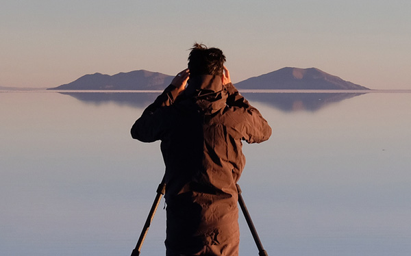

Phase One A/S是世界领先的中画幅数码摄影系统和为专业摄影师提供成像解决方案和工业应用的供应商。
成立于90年代初期，Phase One是一个真正的数码摄影先驱，带着满腔热情的承诺追求卓越画质和创作自由。
Phase One的工程和设计的专业知识在高像素拍摄系统中获得了成像方面的突破，更先进的软件更好的拍摄工作流程和源文件编辑
能力。Phase One在优化硬件和软件集成的理解和才能，突显于其屡获殊荣的Capture One Pro软件—专业摄影师的广泛首选。
Phase One的产业分工主要侧重于航拍采集文化遗产保护的图像精度的工业应用当中。—测绘地球，保护珍贵艺术品和作品。
总部设在丹麦哥本哈根，并接受北欧设计精益求精的高要求，Phase One致力于提供最佳的图像质量和用户体验。
在纽约、东京、科隆、上海和特拉维 夫设有办事处，并与全球合作伙伴的专家组一起，
Phase One致力于服务及为全球客户提供支持。
Phase One和Capture One的注册商标为Phase One A/S。所有其他品牌或产品名称是其各自所有者的商标或注册商标。
